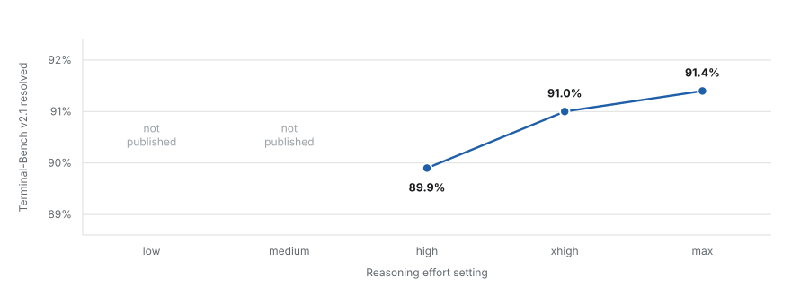
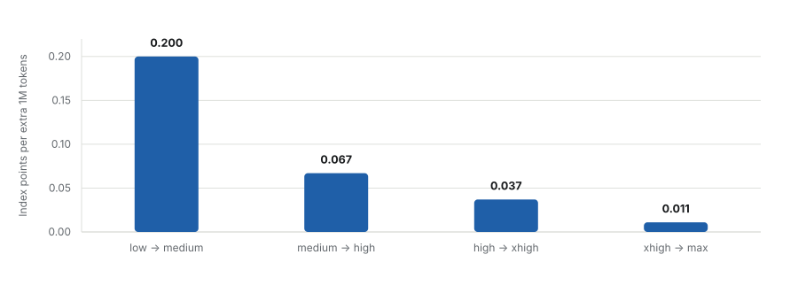
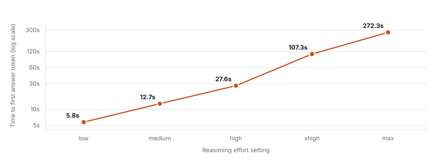

Reasoning effort is not a quality dial; it is a budget for deliberation over whatever is already in the context window. That distinction decides the whole analysis. Raising effort lets the model spend more tokens reasoning before it commits to an answer, which helps when the answer is genuinely hard to derive from material the model can already see. It does nothing at all when the material in front of the model is the wrong material. Fable 5.1's five settings are therefore best read as five points on a deliberation-budget curve, and the interesting question is where that curve stops repaying its cost.
Section oneWhat the dial actually controls
Fable 5.1 ships with five effort settings: low, medium, high, xhigh and max. Anthropic sets high as the default in Claude Code and medium in the consumer surfaces, and states that low and medium effort on 5.1 already match full-effort Fable 5 (Anthropic, September 2026). Artificial Analysis evaluated all five settings before release, running each one through the same Intelligence Index v4.2 suite, which is the only public dataset that holds the workload constant while varying only the effort parameter.
Holding the workload constant matters more than it might appear. Every published comparison of effort settings is a comparison of how much deliberation the model spends on a fixed set of tasks, not of how well it performs on tasks of different shapes. So the curve below measures one thing precisely: the return on additional deliberation, given a fixed and correctly specified problem. It is silent on the failure mode that dominates large real codebases, which is the problem being specified from the wrong files. I return to that at the end, because it is the part that matters most and the part the benchmarks are worst at.
Section twoIntelligence bought against tokens spent
The x-axis below is logarithmic. That choice is not cosmetic: on a log axis a constant return per doubling of spend appears as a straight line, so any downward bend is a real diminishing return rather than an artefact of the scale. Fable 5.1 bends almost immediately.

The shape is the familiar one for any search process with a finite answer space. Early deliberation eliminates the cheap errors, which are numerous; later deliberation works on the residue, which is both smaller and harder. What varies between models is where the elbow sits. On Fable 5.1 it sits at high, and everything above high is buying the residue.
Section threeCoding is where the curve dies earliest
Terminal-Bench v2.1 is the agentic-coding component of the index: long-horizon terminal work, and the closest public proxy for the sort of task a coding agent is actually given. Artificial Analysis publishes it for the top three effort settings only.

Read as scores, 89.9, 91.0 and 91.4 look like a modest but real progression. Read as an error budget the picture is blunter. At high the model fails 10.1 tasks in every hundred; at max it fails 8.6. Spending 4.3 times the tokens removes 1.5 failures per hundred and leaves the other 8.6 exactly where they were. Those remaining failures are not failures of insufficient deliberation, or more deliberation would have cleared them. They are failures of a different kind, and the effort dial has no purchase on them.
This is also the regime where benchmark saturation starts to matter. A 1.5-point spread at the top of a benchmark is close to the resolution of the benchmark itself. The published numbers can tell us that max is not much better than high; they are too coarse to tell us confidently that it is better at all.
Section fourMarginal return collapses eighteenfold
Differencing the frontier gives the quantity that should actually drive the decision: index points gained per additional million output tokens spent on each step up.

High is the last setting before this figure falls below 0.04, which is a reasonable place to draw the line if a line has to be drawn somewhere. In absolute terms the same collapse is visible as efficiency: 2.68 index points per million tokens at low, 1.23 at high, 0.30 at max.
The core trade
High delivers 98 per cent of max-effort Terminal-Bench performance for 23 per cent of the output tokens. That single ratio carries most of the practical argument, and it is why the default in Claude Code is set where it is.
Section fiveLatency is the cost that scales worst
Tokens are the cost that appears on an invoice. Time to first token is the cost that is felt, and it scales far worse than price does. Output speed actually rises with effort, from 52.8 to 69.5 tokens per second, which is why cost per task grows by only 3.6 times across the range while the wait before anything appears grows by 47 times.

The mechanism is straightforward: effort budgets are spent before the first output token is emitted, so the entire deliberation cost is front-loaded into the wait. A four-minute pause does not merely cost four minutes. It breaks the loop in which a developer holds a hypothesis in working memory while the agent tests it, and that loop is most of the value of an interactive coding agent in the first place.
The dataThe full table
| Effort | Index v4.2 | Terminal-Bench | Output tokens | Cost per task | Time to first token | Points per 1M tokens |
|---|---|---|---|---|---|---|
| low | 51 | not published | 19M | $1.70 | 5.8s | 2.68 |
| medium | 53 | not published | 29M | $2.14 | 12.7s | 1.83 |
| high | 54 | 89.9% | 44M | $2.86 | 27.6s | 1.23 |
| xhigh | 56 | 91.0% | 98M | $4.64 | 107.3s | 0.57 |
| max | 57 | 91.4% | 190M | $6.12 | 272.3s | 0.30 |
Output tokens and cost are for running the full Intelligence Index suite, as measured by Artificial Analysis on the Adaptive Reasoning, Default Fallback variants. Pricing is $10 per million input tokens and $50 per million output tokens, with cache reads at $0.25 per million.
Section sixWhat follows in practice
High is the defensible default, and it is already the default in Claude Code. It sits at the elbow of the curve, and the 98-per-cent-for-23-per-cent trade above is the whole argument for it.
Medium deserves more consideration than it usually gets. If Anthropic's parity claim holds, medium on 5.1 is full-effort Fable 5, at 12.7 seconds to first token rather than 27.6. For scaffolding, test writing, mechanical refactors and anything where the shape of the answer is already known, the halved latency is worth more than two index points. This is worth testing directly rather than reasoning about, because the answer depends on the mix of work rather than on the benchmark.
Xhigh is a per-task escalation, not a session default. Buying 1.1 percentage points of Terminal-Bench for 2.2 times the tokens is a poor standing arrangement and a perfectly reasonable one-off when a specific problem has already consumed an hour. Max is harder still to justify for coding: 0.4 points over xhigh for 1.9 times the tokens and 2.5 times the wait. Its case is single-shot research-grade reasoning, not an editing loop.
Section sevenWhat this evidence cannot settle
Two sets of numbers from the same source disagree. Artificial Analysis' launch article quotes an Intelligence Index range of 58 to 66 across 13.1M to 143.7M output tokens; its per-model pages and release comparison table give 51 to 57 across 19M to 190M. This analysis uses the model pages throughout, because they are internally consistent across all five settings and are the only ones carrying per-setting cost and latency. The shape of the curve is the same on either set. The absolute levels are not settled, and I have not been able to reconcile them.
Low and medium have no published Terminal-Bench score, so the coding curve rests on three points rather than five, and the two cheapest settings are inferred from the composite index alone. Anthropic's parity claim for low and medium is a vendor claim and has not been independently evaluated at the level of a coding benchmark.
The larger limitation is one of construct rather than measurement. These are eval-suite aggregates over tasks whose context is supplied correctly by the harness. On a codebase of any real size, the dominant failure mode is not shallow reasoning over the right files; it is confident reasoning over the wrong ones. Raising effort makes that failure worse rather than better, because it produces more elaborate and more plausible inference from the same faulty premises. The effort dial and the retrieval problem are close to orthogonal, and no amount of the former substitutes for the latter.
The distinction worth keeping
A reasoning failure is one where the model had the relevant code in front of it and still derived the wrong conclusion. A retrieval failure is one where it edited the wrong file, missed a caller, or invented an interface that exists elsewhere in the repository under another name. The first is what the effort dial is for. The second is what scoping is for, and it is the one that scales with repository size.
The published data answers a narrower question than the one most people are asking of it. It establishes, fairly convincingly, that additional deliberation on Fable 5.1 stops paying somewhere around high. It says nothing whatever about whether the model is looking at the right code, which on any large repository is the question that decides the outcome.
Sources
Primary data. Artificial Analysis, Claude Fable 5.1 model pages for low, medium, high, xhigh and max effort; the Claude Fable 5.1 release comparison table; the Terminal-Bench v2.1 benchmark leaderboard; and the article "Claude Fable 5.1 tops the Artificial Analysis Intelligence Index". All retrieved 7 September 2026.
Vendor material. Anthropic, "Introducing Claude Fable 5.1 and Claude Mythos 5.1", September 2026, for effort defaults by surface and the low and medium parity claim.
Every derived quantity on this page (points per million tokens, marginal return per step, error-budget framing, and the token and latency multipliers) is computed from the table in section six rather than taken from a source, and can be reproduced from it. Where the two Artificial Analysis figure sets conflict, the discrepancy is stated in section seven rather than resolved.
Disclosure of AI assistance. AI assistance was used for data retrieval, computation, figure generation, drafting and bilingual translation. No vendor supplied data directly for this piece, and no benchmark was run independently; every score here is a published third-party or vendor figure.